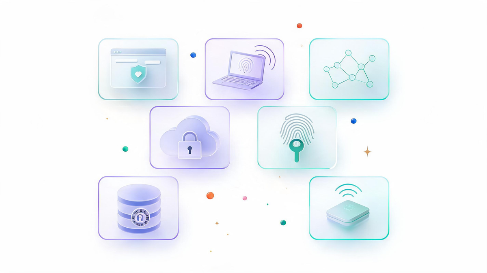
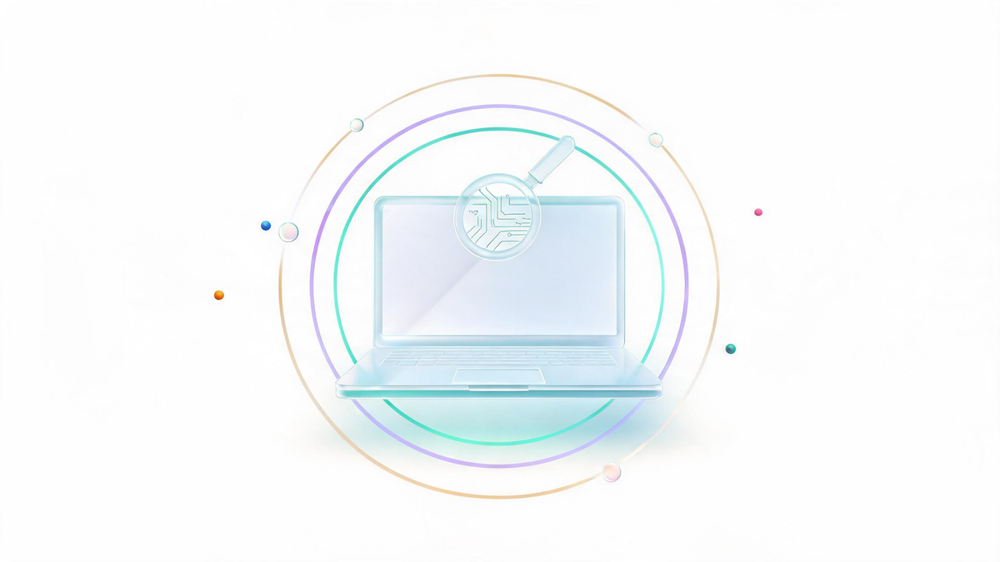
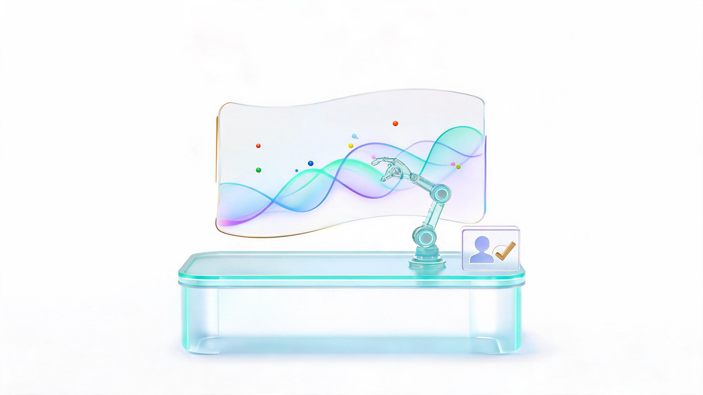
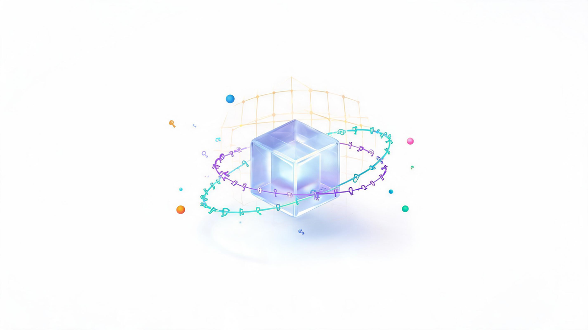
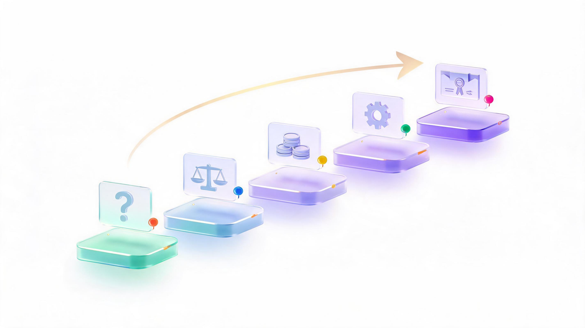

Cyber Security Solutions: 7 Types + How to Choose in 2026
📑 Table of Contents
- What Are Cyber Security Solutions?
- The 7 Types of Cyber Security Solutions
- What the AI Era Changes
- Quantum Cyber Security Solutions
- Cyber Range Solutions: When You Need to Train the Team
- How to Choose: 5 Questions Before You Buy
- Pricing Models: What Solutions Actually Cost
- The Buyer's Reality Check
- Frequently Asked Questions
Search data quietly gives away the intent behind "cyber security solution": it carries a CPC near $15 and roughly 2,400 monthly US searches[12] — numbers you see when buyers, not browsers, are typing. Somewhere behind that query is a person choosing what protects their company's data next year. This guide separates the seven real markets hiding behind the phrase, explains what changed with AI and quantum computing, and ends with a 5-question framework you can run before signing any contract.
Key Takeaways
- "Cyber security solution" is not one product — it spans 7 distinct categories: application, endpoint, network, cloud, identity, data and IoT security.
- EDR is the single most misunderstood (and most searched) category — it detects behavior, not signatures, and is the practical minimum for endpoints in 2026.
- The AI era cuts both ways: attackers automate reconnaissance and phishing, while defenders deploy AI-powered detection and automated triage.
- Quantum-safe means post-quantum cryptography now — NIST finalized its first PQC standards (FIPS 203/204/205), and "harvest now, decrypt later" makes migration urgent for long-lived data.[4]
- Choose by stack fit, not feature lists: 5 questions on assets, regulations, team size, integration and total cost beat any vendor comparison chart.
What Are Cyber Security Solutions?
Cyber security solutions are the technological tools and managed services that protect an organization against cyber attacks — the downtime, stolen data, reputation damage and compliance fines that follow when protection fails.[1] The phrase covers everything from a WAF filtering malicious web traffic to a 24/7 managed detection team. What turns individual products into a "solution" is coverage: layered, overlapping defenses across applications, endpoints, networks, cloud, identities, data and connected devices.
That layering is the core mental model. No single tool stops every threat, so vendors and enterprises map products to assets — and the first job of any buyer is knowing which of the seven asset categories below actually need defending.[2]
The 7 Types of Cyber Security Solutions
Industry references converge on the same taxonomy.[1][3] Here are the seven categories, what each protects, and where buyers get it wrong.

1. Application Security (WAF, API Protection, DDoS)
Application security solutions test software for vulnerabilities during development and shield it in production. The workhorses: a WAF filters HTTP/S traffic in front of web apps; API security protects the endpoints services use to talk to each other; DDoS protection absorbs traffic floods before they take you offline; and testing tooling (SAST, DAST, IAST) finds code-level flaws early.[1] Buyer mistake #1: securing the website but not the APIs — which now carry most of the internet's workload.
2. Endpoint Security (EPP vs EDR vs XDR)
Endpoints — laptops, servers, workstations — remain where breaches start. Traditional EPP (antivirus-style) scans files against known signatures. EDR goes further: it continuously monitors files and process behavior, catching ransomware, fileless malware and polymorphic attacks that signatures miss, while recording forensic evidence for responders.[1] XDR extends that detection across email, identity and cloud layers, correlating signals in one place. If you read nothing else in this guide: in 2026, signature-only antivirus is not an endpoint solution — behavioral detection is the floor.

3. Network Security (NGFW, NAC, Segmentation)
Network solutions monitor and control traffic flows: next-generation firewalls (NGFW) inspect and filter connections, network access control (NAC) quarantines non-compliant devices, and segmentation stops lateral movement so one compromised machine can't reach the whole network.[1] The 2026 shift is that the "network perimeter" now spans home offices and cloud VPCs — so segmentation and zero-trust access matter more than the firewall appliance in the closet.
4. Cloud Security (CASB, CWPP, CSPM)
Three acronyms cover the cloud stack. CASB sits between users and cloud services, extending visibility and enforcing policy. CWPP protects server workloads across public cloud environments from one console. CSPM hunts misconfigurations — the root cause of most cloud data exposures — and automates compliance checks.[1] Cloud providers ship capable native tools (AWS, for example, maps its security services across the identify–protect–detect–respond–recover lifecycle[2]), but multi-cloud shops still need a neutral layer watching all of them.
5. Identity & Access Management (MFA, Passwordless, Zero Trust)
Identities are the new perimeter. IAM solutions enforce who reaches what: multi-factor authentication, passwordless login (biometrics, tokens) that eliminates weak-password risk, and zero-trust access control that verifies every request regardless of network location.[1] Because most breaches still begin with a stolen credential, this category delivers the highest protection-per-dollar for most organizations.
6. Data Security (DLP, Encryption, Sensitive-Data Management)
Data security solutions discover where sensitive information lives (PII, payment data, health records, intellectual property), control its movement, and encrypt it at rest and in transit.[1] Compliance is the forcing function here — PCI, HIPAA, GDPR — and tools that automatically classify data types earn their cost the first time an auditor asks "where exactly is customer data stored?"
7. IoT Security
IoT devices — sensors, cameras, badge readers, building systems — multiply faster than they get secured. IoT solutions combine network isolation for device traffic, encryption between edge and backend, and authentication models built for many-users-per-device reality.[1] Hospitals, factories and smart-office operators feel this category first: unsecured by design, mission-critical by accident.
| Type | Protects | Core Tools | Best-Fit Organization |
|---|---|---|---|
| Application | Websites, APIs, uptime | WAF, API security, DDoS, SAST/DAST | Anyone with public apps or APIs |
| Endpoint | Laptops, servers | EPP, EDR, XDR | Every organization — non-negotiable |
| Network | Traffic flows, perimeter | NGFW, NAC, segmentation, IDS | Offices, data centers, hybrid |
| Cloud | Workloads, configs | CASB, CWPP, CSPM | Cloud-native & multi-cloud |
| Identity | Accounts, access | MFA, passwordless, zero trust | Every organization — highest ROI |
| Data | PII, IP, compliance | DLP, encryption, classification | Regulated, data-heavy teams |
| IoT | Connected devices | Device auth, isolation, encryption | Healthcare, manufacturing, campuses |
What the AI Era Changes
The phrase "best cyber security solutions for the AI era" now shows up in search suggestions — and the honest answer has two halves. On the attack side, AI compresses the cost of reconnaissance: phishing drafts that read natively, vulnerability research at machine speed, and deepfake voice used for social engineering. Our own coverage tracks how AI agents themselves became attack surfaces — escaping sandboxes to reach real systems, and how generative AI lowered the barrier to ransomware. Practitioners are even debating an "AI cyber security golden rule" in forums like r/AI_Governance — evidence that the rulebook is being rewritten in public.[9]
On the defense side, AI-era solutions earn their name by doing three things: behavioral analytics that flag anomalies humans would miss, automated triage that cuts alert noise to a survivable level, and AI-assisted investigation that assembles an incident timeline in minutes instead of hours. The purchasing trap is branding — "AI-powered" appears on every box. Judge by outcomes: what false-positive rate does the vendor publish, and does the AI explain its alerts well enough for your team to act on them?

AI also changes what you're defending. Employees now ship AI-built apps without security review, and agentic tools hold credentials that classic IAM never planned for. If your solution stack doesn't have an answer for machine identities and AI-generated code, it's solving 2024's problem. Related: the full AI agent security landscape and prompt injection reaching the courts.
Quantum Cyber Security Solutions
"Quantum cyber security solutions" sounds like marketing, but the substance is real and standardized: post-quantum cryptography (PQC). In 2024 NIST finalized its first quantum-resistant encryption standards — FIPS 203 (ML-KEM), FIPS 204 (ML-DSA) and FIPS 205 (SLH-DSA) — giving vendors concrete algorithms to migrate toward.[4][5] The urgency comes from "harvest now, decrypt later": adversaries recording encrypted traffic today to decrypt once quantum hardware matures. CISA and NIST urge organizations to start migration planning now, precisely because cryptographic transitions take years.[6]

A practical quantum-safe solution has three parts: a cryptographic inventory (you can't migrate what you can't find), crypto-agile products whose algorithms can be swapped without re-architecture, and vendor roadmaps with published PQC commitments. Prioritize long-lived sensitive data — state secrets, health records, archives — before short-lived traffic. If a vendor's quantum pitch is a slide and not a migration plan, keep walking.
Cyber Range Solutions: When You Need to Train the Team
One of the fastest-growing niche searches is which cyber range solutions mirror enterprise security architectures. A cyber range is a live-fire training environment: a virtualized replica of a real network where blue teams rehearse against simulated attacks on production-like systems. The solutions that genuinely mirror enterprise architecture share four traits: cloned network topologies, production-grade OS images, the same security tooling your SOC runs daily (SIEM, EDR, firewall policies), and simulated identity infrastructure. Training on anything less builds skills for a network you don't have. For organizations building a security program — or justifying training budget to leadership — the range is where tool investment turns into team capability.
How to Choose: 5 Questions Before You Buy
Feature grids are marketing; these five questions are procurement. Run them per category before any demo:
- What exactly are we protecting, and where does it live? Map assets first — 500 cloud VMs and 500 office PCs need different stacks. This one question usually eliminates two of the seven categories immediately.
- Which regulations apply to us? PCI, HIPAA, GDPR or sector rules decide the data-security and identity requirements — and often the audit reporting you need the tool to produce.
- Who operates it — and at what hour? A 24/7 NOC can run best-of-breed point tools; a two-person IT team needs consolidated platforms or an MSSP (managed provider) watching overnight.
- Does it integrate with what we already run? The tool that can't talk to your existing stack adds alerts, not security. Check API depth and ecosystem certifications, not just the integration slide.
- What is the three-year total cost? Licenses are the visible third. Add deployment, training, staffing and scaling overruns — the pricing models below make this concrete.

Pricing Models: What Solutions Actually Cost
Pricing — not features — is where buyers get surprised. The market has consolidated into five models:
| Pricing Model | How It Works | Watch Out For |
|---|---|---|
| Per user / per seat | Flat monthly fee per employee; common for identity, email and awareness tools | Contractor and seasonal headcount creep |
| Per endpoint / per device | Fee per protected laptop, server or VM; standard for EDR/antivirus | Server tiers priced separately — cloud VMs add up fast |
| Consumption / data-based | Billed per GB ingested (SIEM, logging) or per API call | Growth spikes — log volume doubles with business growth |
| MSSP / managed subscription | Monthly service fee; provider runs detection and response for you | Exit terms and who owns the data and configurations |
| Enterprise bundle / tiered suite | Platform deals bundling many products at negotiated rates | Shelfware — paying for modules nobody deployed |
By organization size, realistic stacks look like this: a small business survives on an SMB security suite + MFA + managed EDR — the SMB tooling space Fortinet and peers document is mature.[3] A mid-market adds CSPM, data classification and likely an MSSP for 24/7 coverage. An enterprise runs platform suites with dedicated cloud, identity and data governance layers, plus cyber ranges for team readiness.[11] Public-sector buyers should note that reference architectures exist down to state-government level.[12]
The Buyer's Reality Check
The SERP for this keyword tells its own story: sandwiched between vendor glossaries sit Quora threads asking which platform combines cloud and application security, and Reddit discussions on what tools practitioners actually want.[8][10] Independent testing communities like G2 exist precisely because vendor claims and lived experience diverge.[7] The recurring themes across those discussions: tool sprawl that creates more alerts than clarity, integration promised in demos and missing in production, and pricing that changes at renewal. The countermeasure is boring and effective — a paid pilot quarter with real traffic, success criteria written before the demo, and references from organizations your size. Every serious buyer we've seen burn money skipped at least one of those three.
Frequently Asked Questions
What is cyber security solutions?
Cyber security solutions are the tools and services that protect an organization from cyber attacks — application security, endpoint security, network security, cloud security, identity and access management, data security and IoT security — working together as one defensive stack.
What are cyber security solutions?
The main categories are application security (WAF, API protection, DDoS), endpoint security (EPP, EDR, XDR), network security (NGFW, NAC, segmentation), cloud security (CASB, CWPP, CSPM), identity and access management (MFA, passwordless, zero trust), data security (DLP, encryption) and IoT security.
What is EDR solution in cyber security?
EDR (Endpoint Detection and Response) continuously monitors every file and process on laptops, servers and other endpoints, detects behavior-based threats like ransomware and fileless malware that signature antivirus misses, records forensic data and gives responders tools to isolate devices and roll back damage.
What are the best quantum cyber security solutions?
The proven starting point is post-quantum cryptography based on NIST's finalized standards (FIPS 203, 204 and 205): inventory your cryptographic assets, prioritize long-lived sensitive data against harvest-now-decrypt-later risk, and choose vendors with published PQC migration roadmaps and crypto-agile products.
Which cyber range solutions mirror enterprise security architectures?
Look for ranges that virtualize your real topology — cloned network segments, production-like operating system images, live security tooling (SIEM, EDR, firewall policies) and simulated identity infrastructure — so blue teams train on the same dashboards, alerts and crown-jewel assets they defend in production.
📚 Sources & Citations (12)
- Imperva — What Are Cyber Security Solutions (category taxonomy) — www.imperva.com
- AWS — What Are Cybersecurity Solutions (lifecycle mapping) — aws.amazon.com
- Fortinet — SMB Cybersecurity Tools — www.fortinet.com
- NIST — Post-Quantum Cryptography Standards (FIPS 203/204/205, finalized 2024) — www.nist.gov
- NIST — Post-Quantum Cryptography Project — csrc.nist.gov
- CISA — Quantum-Readiness Migration Planning Guidance — www.cisa.gov
- G2 — Best Website Security Software (independent testing) — learn.g2.com
- Reddit r/SecurityCareerAdvice — What cybersecurity tools do you really want to use — www.reddit.com
- Reddit r/AI_Governance — AI cyber security solution golden rule — www.reddit.com
- Quora — Which security solution provides cloud + application security in one platform — www.quora.com
- Motorola Solutions — Managed & Support Cybersecurity Services — www.motorolasolutions.com
- Semrush — "cyber security solution" keyword data (volume, KD, CPC, Oct 2026) & Oregon.gov EIS security architecture reference — www.oregon.gov